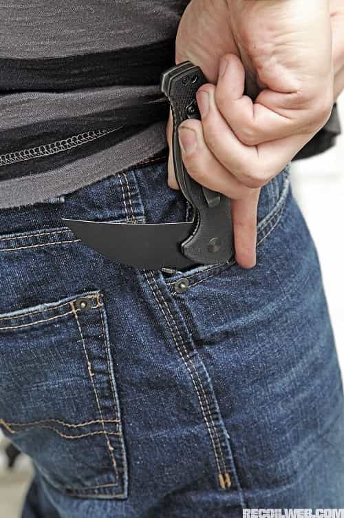
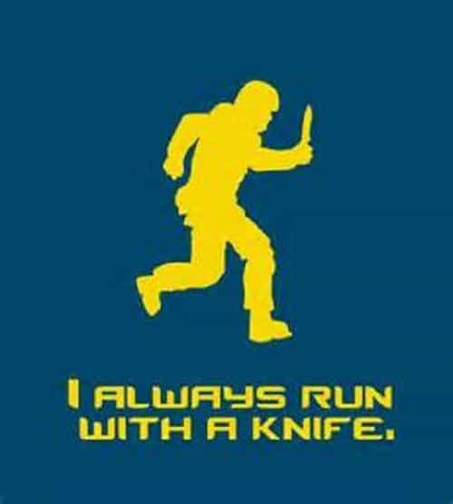

Note: The following information is provided for your knowledge only. Although everyone has a right to self-defense, it is incumbent on you to know the self-defense laws in your area if you ever have to physically protect yourself or others. Furthermore, a knife should only be used in self-defense when you, or someone else, is at risk of death or serious bodily harm. As such, use this information at your own risk.
In my last article “It’s Time You Get a Proper Folding Knife“, the various attributes and characteristics of an ideal folding knife were discussed. In this present article, it is now time to articulate when to use a folding knife. And by this, I do not mean the obvious idea of when to use a folder for standard cutting tasks, but rather, I am speaking of when to use a folding knife for your own personal protection.
After all, when life and limb are on the line, it is critical to know when to deploy that blade in your pocket; otherwise, it’s just a glorified paperweight. So, let’s get started.
A knife fight will not be like this.
The first thing to understand about using a knife for self-defense is that doing so will not be a pretty thing. Whether you are the one doing the cutting, or the one getting cut—or most likely both—any altercation with a blade will be brutal, bloody, and bestial.
This is not some fantasy duel where you are tossing your knife from hand-to-hand as you parry and jab with your opponent, just waiting for the perfect moment to execute that Jet Li triple-strike. No, instead, any real knife-fight will likely involve shock, surprise, and serious unpleasantness. You likely won’t even see your opponent’s knife until you have been stabbed with it a few times. This won’t be like the movies; instead, it will be a life-and-death struggle the likes of which few modern humans have ever been involved in.
So, given all of the above, please realize that the very first rule of knife-fighting is this: avoid any knife-fight if you can. Run, swim, or jump if you have to, but in the end, do whatever you can to avoid battling a blade. And if you cannot avoid some guy with a knife then shoot the prick. That is the second rule of knife-fighting. However, if you have no gun, then the third rule of knife-fighting is to know when to use your own folder. And, ultimately, there are only two ways to deploy your folding knife: reactively and proactively.

Know that if you are faced with a knife-wielding opponent who has already deployed his own blade and is coming after you, then it will be quite difficult to have the time to deploy your own folder in response. However, while this will be difficult, it is not impossible, for there are a number of circumstances where reacting with your own blade is a perfectly reasonable response.
First, consider that there are individuals who have become so quick with deploying their own folding knife that they can draw it and open it as fast as they could draw a pistol. Now, doing so takes a great deal of practice, but nevertheless, if you are a knife enthusiast, and if you practice so much that you could draw your folder in a split second, it might be entirely appropriate for you to draw and use your own knife if you are suddenly faced with a close-range blade-wielding opponent.
For other people, empty-handed self-defense techniques might be preferable in such circumstances given that you will likely get stabbed repeatedly while fumbling about for your own knife. So, know your own level of skill and only reactively deploy your folder if you know that you can do so.
Second, if you are attacked by a knife-wielding individual, and if you are able to turn and run from the assailant for a short period of time, this will give you the few precious moments that you need to draw and ready your own folder just in case you cannot run far or fast enough. After all, when facing a knife, better to have your own knife then to have no knife at all.

Third, if you happen to be fighting against an enemy with a knife (or another lethal weapon), and if—God forbid—you happen to find yourself grappling and wrestling with such an opponent, then this might give you a moment to react and draw your own folder to end the struggle while in that grappling situation. Again, this won’t be pretty, but better that he is stabbed than you.

Not a bad time to grab your blade and stick it in his leg.
So, even when faced with a knife-wielding opponent, there are certain circumstances when you can effectively react with your own knife, even if doing so might be difficult under such conditions.
Although it is possible to effectively react with your folder, the fact is that a folding knife is even better in a proactive role. By this I mean that, in certain situations, it is possible to preemptively deploy your folding knife in preparation for use in a self defense scenario.
For example, if you ever find yourself in the wrong part of a city, suddenly being approached by a gang of rather feral-looking youths, then it is perfectly sensible, in such a situation, to preemptively deploy your folder in preparation for a confrontation. Of course, you will conceal your folder and not let them know that you have it deployed, but it will be ready nonetheless.
If the gang leaves you alone, then so much the better, but at least you were prepared. Note as well that this course of action would be quite legal because if the gang attacks you, then it would be easy to articulate why you felt the need to use your folding knife to protect yourself in this drastically outnumbered situation given that your life was arguably at risk. Note as well that such reasoning would also apply if a very small (or elderly) man was facing a much larger and more youthful opponent.
Second, and similar to the first scenario, if you are on the wrong side of the tracks and are facing one unarmed individual who looks like he is going to cause you some trouble, feel free to get your knife ready as well. However, don’t open it, as using the blade could be construed as using lethal force in a situation that did not warrant it.
Instead, just have the knife in a tight grip with the bottom of the knife just slightly beyond the bottom of your closed fist. Then, if attacked, feel free to rain hammer blows down on your assailant with the bottom end of the knife giving your blows a little extra “bite”. This way, you stay within the bounds of the law, but you nevertheless gain an advantage over your unarmed attacker.
Finally, in countries where gun ownership is difficult, having a knife for proactive home-defense is also a must—although, in the case of home-defense, I would recommend a short sword or kukri, not just a knife. Either way though, when you hear that bump in the night, never get out of bed until your hand has closed around the grip of your bedside folder.
A little something for home defense when your handgun misfires.
In the end, knife-fighting is not a game, nor is it something that you want to engage in. Avoid a knife-fight if at all possible and shoot the bastard if you can’t. But when all else fails, better to know when to reactively or proactively use your own folder if circumstances force you to do so. So be ready. Fight like a beast. And win.
Read More: It’s Time You Get a Proper Folding Knife